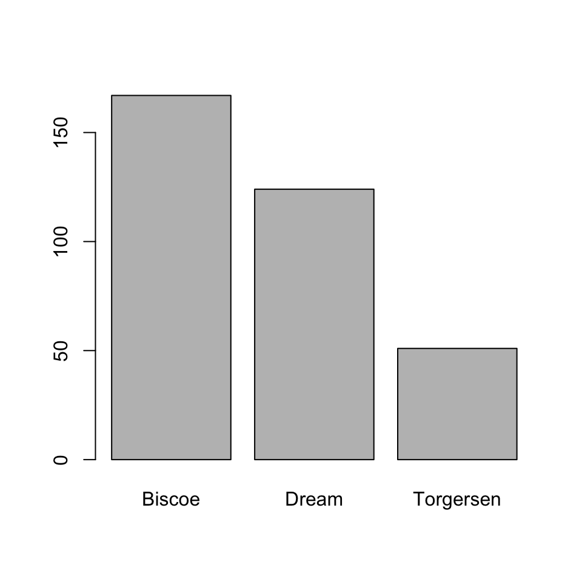
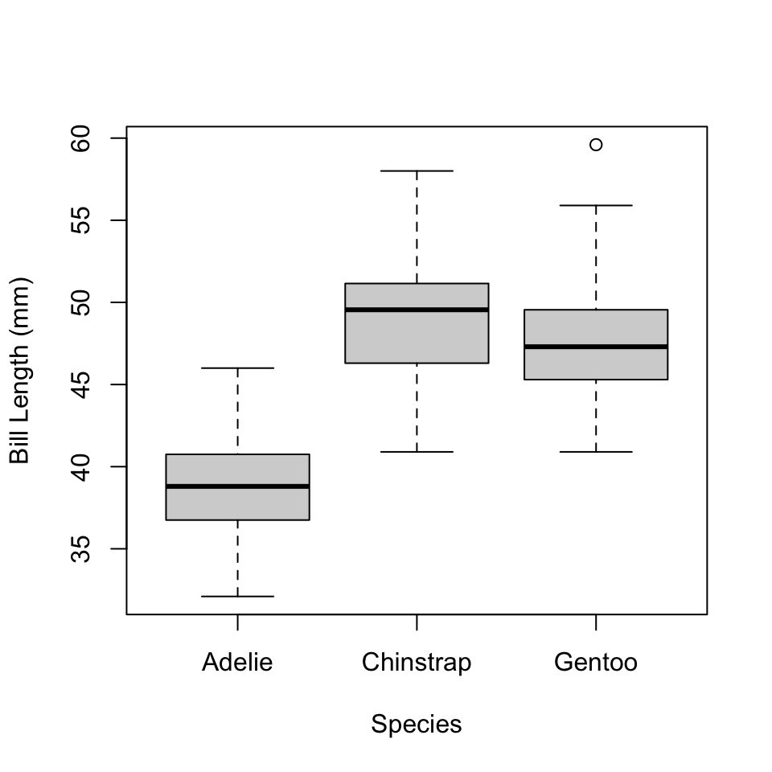
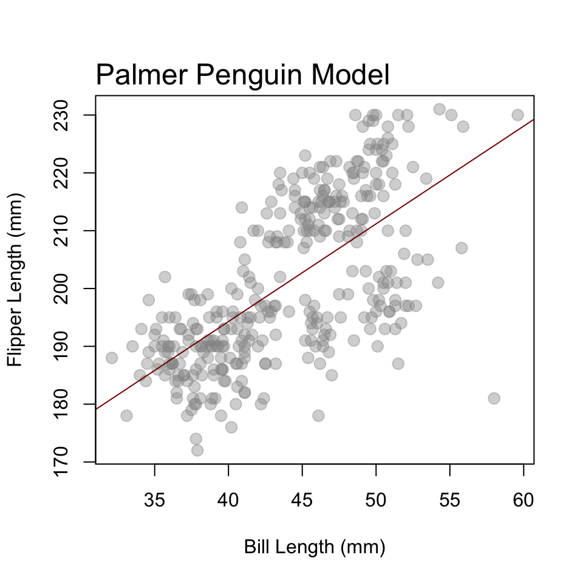

Chapter 3 An Example Workflow

Figure 3.1: An idealized workflow in R
3.1 In fits and starts
To give you a feel for what all can be done with R, let’s walk through an example workflow, as shown in Fig. 3.1. This typically involves importing data, reshaping and/or subsetting it to get it into a format necessary for analysis, doing some preliminary descriptive statistics to explore general properties of the data, doing some inferential statistics to investigate trends in the data, and summarizing the results of the analysis. At various stages, visualizing the data will be extremely helpful, either to explore the data further or to help communicate the results to others. A lot of the output of this process, we will also want to save for later, perhaps to include in a publication (like a figure or model summary), but maybe also to avoid repetition of difficult and time-consuming tasks.
Now, obviously, the diagram in Figure 3.1 is meant to give you a feel for what a typical workflow should look like, at least ideally. As you can see, it is very austere and organized, almost linear, with cool, pleasant colors. You might even call it inviting. Do not be fooled, however. For what you will actually encounter with your work will often look like this:
Figure 3.2: The often circuitous and sometimes painful maze of statistical analysis in R.
The path traversed through the maze in this figure has a disorienting, almost chaotic, feel to it.3 It suggests - correctly - that statistical programming involves lots and lots of false starts, dead-ends, and backtracking. Frankly, there’s no avoiding these frustrations, but that’s not because what you’re doing is statistical programming per se, but rather just writing to express ideas. And, like any writing exercise, you start with a blank page, add content here or there, and then, you know, revise, revise, revise, until you get something sufficiently polished that it conveys its intended meaning well. So, as I walk through this example workflow, maybe think about the idealized diagram more as a representation of your final (or final-ish4) draft (“script,” in code talk), and then the maze is just the frustrating, though ultimately rewarding, write-and-revise path to get there.
3.2 The whole shebang
3.2.1 Load data
penguins <- read.csv("penguins.csv")
head(penguins)
## species island bill_length_mm flipper_length_mm body_mass_g sex year
## 1 Adelie Torgersen 39.1 181 3750 male 2007
## 2 Adelie Torgersen 39.5 186 3800 female 2007
## 3 Adelie Torgersen 40.3 195 3250 female 2007
## 4 Adelie Torgersen NA NA NA <NA> 2007
## 5 Adelie Torgersen 36.7 193 3450 female 2007
## 6 Adelie Torgersen 39.3 190 3650 male 20073.2.2 Do grunt work
Are observations of bill length missing for any penguins in this dataset? To answer this question, we can check for NA values. And if we really need that information, we can exclude those penguins from our analysis.
any(is.na(penguins$bill_length_mm))
## [1] TRUE
penguins <- subset(penguins, !is.na(bill_length_mm))The exclamation point ! (often called “bang”) means “not,” so you can read that second line as “subset the penguins table and give me the rows that do not have NA values for bill length.”
Now, before moving on to the fun stuff, we might want to ask a few preliminary questions of our data.
How many penguins are on each island?
What does this distribution look like?

What is the mean bill length for each species?
aggregate(bill_length_mm ~ species,
FUN = mean,
data = penguins)
## species bill_length_mm
## 1 Adelie 38.79139
## 2 Chinstrap 48.83382
## 3 Gentoo 47.50488And the standard deviation?
aggregate(bill_length_mm ~ species,
FUN = sd,
data = penguins)
## species bill_length_mm
## 1 Adelie 2.663405
## 2 Chinstrap 3.339256
## 3 Gentoo 3.081857How is bill length distributed across species?

3.2.3 Do fun stuff
penguin_model <- lm(flipper_length_mm ~ bill_length_mm, data = penguins)
summary(penguin_model)
##
## Call:
## lm(formula = flipper_length_mm ~ bill_length_mm, data = penguins)
##
## Residuals:
## Min 1Q Median 3Q Max
## -43.708 -7.896 0.664 8.650 21.179
##
## Coefficients:
## Estimate Std. Error t value Pr(>|t|)
## (Intercept) 126.6844 4.6651 27.16 <2e-16 ***
## bill_length_mm 1.6901 0.1054 16.03 <2e-16 ***
## ---
## Signif. codes: 0 '***' 0.001 '**' 0.01 '*' 0.05 '.' 0.1 ' ' 1
##
## Residual standard error: 10.63 on 340 degrees of freedom
## Multiple R-squared: 0.4306, Adjusted R-squared: 0.4289
## F-statistic: 257.1 on 1 and 340 DF, p-value: < 2.2e-16Estimate flipper length using penguin_model.
est_flipper_length <- predict(penguin_model)
obs_flipper_length <- penguins$flipper_length_mm
obs_bill_length <- penguins$bill_length_mmPlot the estimated trend against the observed values:
plot(obs_flipper_length ~ obs_bill_length,
pch = 19,
cex = 1.3,
col = adjustcolor("#949494", alpha.f = 0.4),
xlab = "Bill Length (mm)",
ylab = "Flipper Length (mm)")
abline(penguin_model, col = "#850000")
mtext(text = "Palmer Penguin Model",
side = 3,
line = 0.3,
adj = 0,
cex = 1.5)
3.2.4 Export results
Save the cleaned data and the linear model.5
write.csv(penguins, "penguins.csv", row.names = FALSE)
save(penguin_model, file = "penguin_model.Rdata")And that’s it!